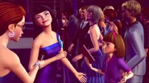
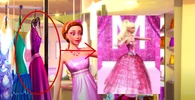

Barbie and Raquelle are in Wings and Things, but suddenly Raquelle
wings falls.
Barbie, Raquelle, Taylor, and Carrie are in Fairy Sphere and Carrie
gets a helmet and they ride the Fairy Sphere.
The boy is sitting there and she sees a girl with cupcakes and the
boy eats one but the horse runs and eats it.
Raquelle is holding lots of clothes and she falls and then one dress
is in her head.
Barbie and Ken are walking on the red carpet but Ken rips Barbie's
dress.
Barbie asks the boy for hot chocolate then he gives Barbie but its
flying then lots of hot chocolates go to Barbie.
Crystal cleans the room but the cat and dog make the garbage can
trip.
Trivia
Makena has been reused as Barbie's fan at the premiere.

In the opening sequence, while Barbie was getting ready, there is a
rack of clothes that contains the final dress from Barbie: A Fashion
Fairytale, but it is coloured pink.

The film grossed over $12,329 in the Home Market Performance of US
DVD sales.